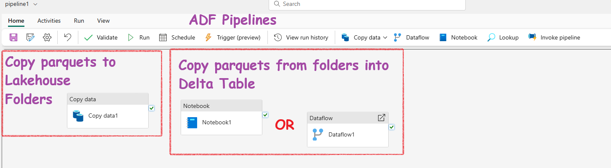
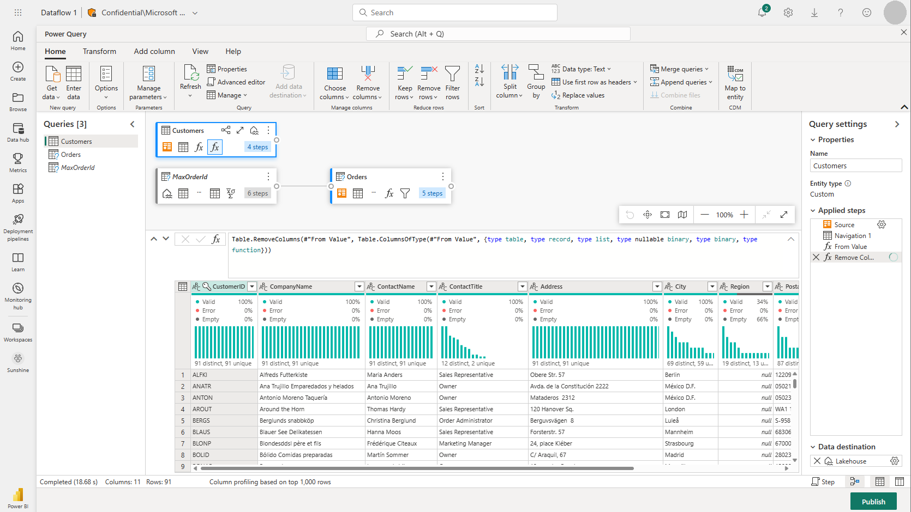

- Background
- Ways to Ingest Data into Lakehouse
- When to choose which method? Microsoft's recommendation.
- The entire project in just 8 pyspark lines
- THE code
- The explanation
- Appendix
- Connect to Azure blob storage with Spark from Fabric
- Connect to Azure SQL Database with a Service Principal
- Write data into a Lakehouse File
- Write data into a Lakehouse Delta Table
- Optimize[Fewer files] - V-Order \& optimizeWrite
- Knowledge check
- Summary
Background
Here, I'll show you how to use a PySpark Notebook to build a complete ETL solution. We'll import parquet files from external sources into a Fabric Lakehouse folder, clean the data, and create Delta tables—all using the PySpark Notebook.
Ways to Ingest Data into Lakehouse
Apart from using Pyspark in Notebooks there are other methods to Copy data into Lakehouse. Based on the the situation you will have to choose a method.
- ADF Data Pipelines: You can both ingest and transoform using ADF pipeline. Use the Copy data activity for ingestion(no transformation) and a Notebook activity or Dataflow activity for transformation. If there is no transformation, blindly choose Copy data activity. 
{: .highlight } {: .fw-400 } The Copy data activity: Best performance, fastest, most-direct when copying data from large datasets or migrating data from one system to another. But, this activity can't do any transformation.
-
Power BI Dataflow: Power BI Dataflows can handle both ingestion and transformation. They support ingestion from thousands of sources and use Power Query for transformation. Note: Fabric uses the same Power BI Dataflow. 
-
Manual Upload: You can always manually upload your files into a folder. Then you can use a Noteook or Dataflow for the transformation and Delta Lake Table creation :-)

-
Additionally, there's an important T-SQL command called COPY INTO. This command copies data into tables and supports Parquet and CSV formats from Azure Data Lake Storage Gen2/Azure Blob. However, it only copies data into tables and not into Lakehouse folders from external systems.
When to choose which method? Microsoft's recommendation.
Scenario 1: You have a Fabric tenant that contains a lakehouse named Lakehouse1. You need to ingest data into Lakehouse1 from a large Azure SQL Database table that contains more than 500 million records. The data must be ingested without applying any additional transformations. The solution must minimize costs and administrative effort.
What should you use to ingest the data?
- a pipeline with the Copy data activity
- a SQL stored procedure
- Dataflow Gen2
- notebooks
Answer: When ingesting a large data source without applying transformations, the recommended method is to use the Copy data activity in pipelines. Notebooks are recommended for complex data transformations, whereas Dataflow Gen2 is suitable for smaller data and/or specific connectors.
Scenario 2: You have a Fabric tenant that contains a lakehouse.On a local computer, you have a CSV file that contains a static list of company office locations. You need to recommend a method to perform a one-time copy to ingest the CSV file into the lakehouse. The solution must minimize administrative effort. Which method should you recommend? - a Dataflow Gen2 query - a local file upload by using Lakehouse explorer - a pipeline with the Copy data activity - a Spark notebook
Answer: For a one-time copy of small local files into a lakehouse, using Lakehouse explorer and a local file upload is recommended.
Scenario 3: You need to ensure that the pipeline activity supports parameterization. Which two activities support parameterization in the data pipeline UI? - Dataflow Gen2 - KQL activity - notebooks - SQL stored procedures - user-defined functions
Answer: Only notebooks and SQL stored procedures provide a possibility to define parameters in the data pipeline UI. Dataflow Gen2 and KQL activity only require connection details, but no parameters can be supplied. User-defined functions cannot be added as an activity to a pipeline.
Scenario 4: You have an external Snowflake database that contains a table with 200 million rows. You need to use a data pipeline to migrate the database to Lakehouse1. What is the most performant (fastest) method for ingesting data this large (200 million rows) by using a data pipeline?
- Data Pipeline (Copy data)
- Data Pipeline (Dataflow Gen2)
- Data Pipeline (Lookup)
- Data Pipeline Spark (Notebook)
Answer: Copy data is the fastest and most direct method for migrating data from one system to another, with no transformations applied.
The entire project in just 8 pyspark lines
THE code
Here is the core code for the project. I've intentionally kept it short to highlight the key concept.
# Enable V-Order for Parquet files to improve data skipping and query performance.
# V-Order helps in reducing the amount of data read during queries by organizing the data for better compression and faster access.
spark.conf.set("spark.sql.parquet.vorder.enabled", "true")
# Enable automatic Delta optimized write to enhance write performance.
# This setting allows Delta Lake to optimize the way data is written, improving speed and efficiency.
spark.conf.set("spark.microsoft.delta.optimizeWrite.enabled", "true")
# wasbs path = cont_name@act_name.blob.core.windows.net/folder_path
# Read parquet data from Azure Blob Storage path
df = spark.read.parquet(f'wasbs://nyctlc@azureopendatastorage.blob.core.windows.net/yellow')
# Right click ...(RawData) folder -> Copy ABFS Path.
# ABFS_Path/yellow_taxi(New sub folder name)
# Write the first 1000 rows as a Parquet file
df.limit(1000).write.mode("overwrite").parquet(f"abfss://WorkSpaceA@onelake.dfs.fabric.microsoft.com/LakeHouseBhutu.Lakehouse/Files/RawData/yellow_taxi")
# Now read back from the folder where we copied the parquets files
raw_df = spark.read.parquet(fabric_put_path)
# Filter rows where column 'trip_distance' is greater than 0 and column 'fare_amount' is greater than 0
cleaned_df = raw_df.filter(raw_df.tripDistance > 0)
# Now write the cleaned df into Delta Table in Lakehouse
cleaned_df.write.format("delta").mode("append").saveAsTable("delta_yellow_taxi")
# Display results
display(cleaned_df.limit(10))
The explanation
I have included screenshots of the working code in the notebook and added some comments to help you understand it.

Appendix
The code above is quite short. In the real world, it wouldn't be this simple. To better understand the concepts, review the following sections that provide more detailed explanations.
Connect to Azure blob storage with Spark from Fabric
# Azure Blob Storage access info
blob_account_name = "azureopendatastorage"
blob_container_name = "nyctlc"
blob_relative_path = "yellow"
blob_sas_token = "sv=2022-11-02&ss=bfqt&srt=c&sp=rwdlacupiytfx&se=2023-09-08T23:50:02Z&st=2023-09-08T15:50:02Z&spr=https&sig=abcdefg123456"
# Construct the path for connection
wasbs_path = f'wasbs://{blob_container_name}@{blob_account_name}.blob.core.windows.net/{blob_relative_path}?{blob_sas_token}'
# Read parquet data from Azure Blob Storage path
blob_df = spark.read.parquet(wasbs_path)
# Show the Azure Blob DataFrame
blob_df.show()
Connect to Azure SQL Database with a Service Principal
# Placeholders for Azure SQL Database connection info
server_name = "your_server_name.database.windows.net"
port_number = 1433 # Default port number for SQL Server
database_name = "your_database_name"
table_name = "YourTableName" # Database table
client_id = "YOUR_CLIENT_ID" # Service principal client ID
client_secret = "YOUR_CLIENT_SECRET" # Service principal client secret
tenant_id = "YOUR_TENANT_ID" # Azure Active Directory tenant ID
# Build the Azure SQL Database JDBC URL with Service Principal (Active Directory Integrated)
jdbc_url = f"jdbc:sqlserver://{server_name}:{port_number};database={database_name};encrypt=true;trustServerCertificate=false;hostNameInCertificate=*.database.windows.net;loginTimeout=30;Authentication=ActiveDirectoryIntegrated"
# Properties for the JDBC connection
properties = {
"user": client_id,
"password": client_secret,
"driver": "com.microsoft.sqlserver.jdbc.SQLServerDriver",
"tenantId": tenant_id
}
# Read entire table from Azure SQL Database using AAD Integrated authentication
sql_df = spark.read.jdbc(url=jdbc_url, table=table_name, properties=properties)
# Show the Azure SQL DataFrame
sql_df.show()
Write data into a Lakehouse File
# Write DataFrame to Parquet file format
parquet_output_path = "dbfs:/FileStore/your_folder/your_file_name"
df.write.mode("overwrite").parquet(parquet_output_path)
print(f"DataFrame has been written to Parquet file: {parquet_output_path}")
# Write DataFrame to Delta table
delta_table_name = "your_delta_table_name"
df.write.format("delta").mode("overwrite").saveAsTable(delta_table_name)
print(f"DataFrame has been written to Delta table: {delta_table_name}")
Write data into a Lakehouse Delta Table
# Use format and save to load as a Delta table
table_name = "nyctaxi_raw"
filtered_df.write.mode("overwrite").format("delta").save(f"Tables/{table_name}")
# Confirm load as Delta table
print(f"Spark DataFrame saved to Delta table: {table_name}")
Optimize[Fewer files] - V-Order & optimizeWrite
V-Order and OptimizeWrite sorts data and creates fewer, larger, more efficient Parquet files. Hence, the deta table is optimized. V-Order is enabled by default in Microsoft Fabric and in Apache Spark.
Here is how you can configure them in Pyspark:
# Enable V-Order
spark.conf.set("spark.sql.parquet.vorder.enabled", "true")
# Enable automatic Delta optimized write
spark.conf.set("spark.microsoft.delta.optimizeWrite.enabled", "true")
Knowledge check
- What are the four data ingestion options available in Microsoft Fabric for loading data into a data warehouse?
Answer: COPY (Transact-SQL) statement, data pipelines, dataflows, and cross-warehouse are the four data ingestion options available in Microsoft Fabric for loading data into a data warehouse.
- What are the supported data sources and file formats for the COPY (Transact-SQL) statement in Warehouse?
Answer: The COPY (Transact-SQL) statement currently supports the PARQUET and CSV file formats, and Azure Data Lake Storage (ADLS) Gen2 and Azure Blob Storage as data sources.
- What is the recommended minimum file size when working with external data on files in Microsoft Fabric?
Answer: When working with external data on files, we recommend that files are at least 4 MB in size.
Summary
- Pyspark notebook alone can completely create end-to-end robust ETL workflows
- ADF Pipeline with Copy Data + Notebook or Dataflow can do the same job
- Copy data activity in ADF pipeline can't do transformation. It is used for data ingestion only.
-
Read, write and saveAsTable are the three important pyspark commands to learn.
-
spark.read.parquet("path of external parquets") df.limit(1000).write.mode("overwrite").parquet("path of lakehouse folder")cleaned_df.write.format("delta").mode("append").saveAsTable("theDeltatableName")